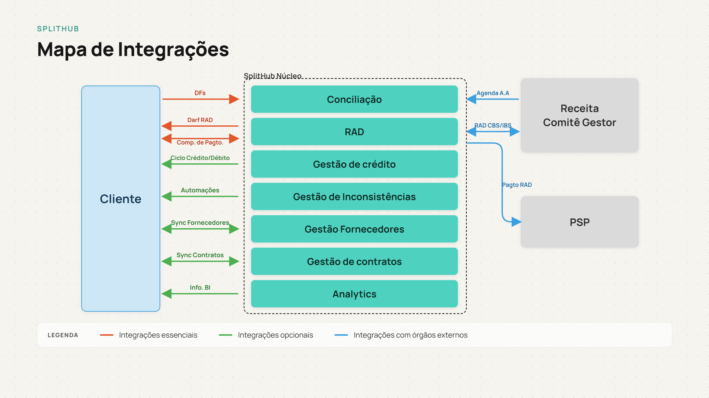

Mapa de Integração
O Splithub conecta-se a diversos sistemas e órgãos reguladores através de integrações bem definidas. O diagrama abaixo apresenta a arquitetura de integrações do projeto, classificadas em três categorias conforme sua criticidade e obrigatoriedade.

Classificação das Integrações
| Tipo | Cor | Descrição | Exemplos |
|---|---|---|---|
| Essenciais | Vermelho | Integrações obrigatórias para o funcionamento core da plataforma. Fluxos críticos de processamento tributário. | DFs (Documentos Fiscais), DARF RAD, Comprovante de Pagamento |
| Opcionais | Verde | Integrações que expandem funcionalidades e melhoram operação, mas não são obrigatórias para o core. | Ciclo Crédito/Débito, Automações, Sync Fornecedores, Sync Contratos, Analytics (BI) |
| Órgãos Externos | Azul | Integrações com órgãos reguladores e sistemas de terceiros. Comunicação com autoridades fiscais. | Receita Federal (Agenda, RAD CBS/IBS), PSP (Pagamento RAD) |
Detalhamento por Tipo
Integrações Essenciais
- Documentos Fiscais (DFs): Ingestão de DFs (NF-e, CT-e, NFCom, etc.) para processamento de tributos e cálculo de créditos de IBS/CBS.
- DARF RAD: Emissão e processamento de DARFs (Documento de Arrecadação) conforme regras de RAD (Recolhimento pelo Adquirente).
- Comprovante de Pagamento: Rastreamento de comprovantes de pagamento para validação de créditos e ciclo de vida fiscal.
Integrações Opcionais
- Ciclo Crédito/Débito: Rastreamento detalhado do ciclo de vida de créditos e débitos tributários, com webhooks de mudança de status.
- Automações: Disparo automático de ações com base em eventos fiscais (ITSM, cobrança fornecedor, relatórios).
- Sync Fornecedores: Sincronização bidirecional de dados cadastrais de fornecedores com seu ERP.
- Sync Contratos: Sincronização de contratos entre cliente e fornecedor, vinculação com obrigações fiscais.
- Analytics (BI): Exportação de dados para ferramentas de inteligência de negócios e análise fiscal.
Integrações com Órgãos Externos
- Receita Federal - Comitê Gestor: Submissão de dados de RAD e IBS/CBS para órgãos reguladores. Inclui Agenda de Arrecadação (Agenda A.A) e informações de RAD CBS/IBS.
- PSP (Prestador de Serviço de Pagamento): Coordenação de pagamentos RAD através de instituições financeiras autorizadas.
As integrações essenciais formam o backbone tributário da plataforma. Integrações opcionais permitem otimização de processos. Integrações com órgãos externos garantem conformidade regulatória com a Reforma Tributária 2026.